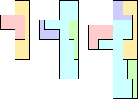

n=4

n=4

n=4

n=4 (Berend van der Zwaag)
1. Tiling:
If P is a polyomino, what is the fewest total number of pieces we can cut 3P and 4P into to assemble the pieces to make 5P? What are the best solutions for larger polyominoes? Other regular polygons? Other polyforms?
2. Packing:
For a positive integer n, what is the largest shape P with the property that we can fit a total of n copies of P into squares of sides 3 and 4, or into a square of side 5?
3. Covering:
If P is a polyomino, then what proportion of 5P can 3P and 4P cover? Can we ever do better by tilting the polyominoes? What are the best solutions for larger polyominoes? Other regular polygons? Other polyforms?
n=4 | n=4 | n=4 | n=4 (Berend van der Zwaag) |
 n=4 |  n=4 (Berend van der Zwaag) |  n=5 (George Sicherman) |  n=5 (George Sicherman) |
 n=4 (Mike Reid) |  n=5 (Berend van der Zwaag) |  n=4 (Livio Zucca) |  n=6 (George Sicherman) |
 n=5 (George Sicherman) |  n=6 (Gavin Theobald) |  n=6 (Gavin Theobald) |  n=5 (Mike Reid) |
 n=7 (Gavin Theobald) |  n=7 (Greg Fredrickson) |  n=6 (Gavin Theobald) |  n=6 (Gavin Theobald) |
George Sicherman provided these solutions for polyiamonds:
 n=4 |  n=4 |  n=3 |  n=4 |  n=5 |
 n=4 |  n=4 |  n=4 |  n=6 |
 n=4 |  n=5 |  n=5 |
 n=6 |  n=4 |  n=5 |
 n=4 |  n=4 |  n=5 |
 n=5 |  n=6 |  n=5 |
George Sicherman also provided these solutions for polyaboloes:
 n=4 |  n=4 |  n=4 |
 n=5 |  n=4 |  n=5 |
 n=6 |  n=5 |  n=6 |
 n=6 |  n=4 |  n=4 |
 n=6 |  n=6 |  n=6 |
 n=6 |  n=5 |
Serhiy Grabarchuk gave this solution for regular pentagons:

| n | Fraction Covered | Packing |
|---|---|---|
| 1 | 16/25 = .64 | 
|
| 2 | 17/25 = .68 | 
|
| 3 | 21/25 = .84 (Richard Sabey) (Jeremy Galvagni) | 
|
| 4 | .832+ (Jeremy Galvagni) | 
|
| 5 | 9/10 = .9 (Richard Sabey) | 
|
| 6 | 24/25 = .96 (Berend van der Zwaag) | 
|
| 7 | .865+ (Jeremy Galvagni) | 
|
| 8 | 24/25 = .96 | 
|
| 9 | .9458+ (Maurizio Morandi) (Jeremy Galvagni) | 
|
| 10 | 9/10 = .9 (Berend van der Zwaag) | 
|
| 11 | .9495+ (Maurizio Morandi) | 
|
| 12 | 24/25 = .96 | 
|
| 13 | 91/100 = .91 (Berend van der Zwaag) (Jeremy Galvagni) | 
|
| 14 | .9588+ (Jeremy Galvagni) | 
|
| 15 | .9473+ (Maurizio Morandi) | 
|
| 16 | 24/25 = .96 (Berend van der Zwaag) | 
|
| 17 | .9582+ (Joe DeVincentis) | 
|
| 18 | 24/25 = .96 (Berend van der Zwaag) | 
|
| 19 | .9527+ (Joe DeVincentis) | 
|
| 20 | .9500+ (Maurizio Morandi) (Joe DeVincentis) | 
|
| 21 | .9360+ (Maurizio Morandi) | 
|
| 22 | .9640+ (Maurizio Morandi) | 
|
| 23 | 598/625 = .9568 (Joe DeVincentis) | 
|
| 24 | 24/25 = .96 | 
|
| 25 | 1 | 
|
Jeremy Galvagni gave an upper bound on the possible fraction covered: max{ (9n)/(25 9n/25
9n/25 ) , (16n)/(2516n/25) }. This occurs when one of the small squares is completely filled and the other has wasted space less than or equal to the area of the shape. This means that the packings above are optimal for n=1, 5, 6, 8, 12, 16, 18, 24, and 25.
) , (16n)/(2516n/25) }. This occurs when one of the small squares is completely filled and the other has wasted space less than or equal to the area of the shape. This means that the packings above are optimal for n=1, 5, 6, 8, 12, 16, 18, 24, and 25.
 21/25 = .84 |  .8662+ |  21/25 = .84 |  .8643+ |
 21/25 = .84 |  89/100 = .89 |  4/5 = .8 |  4/5 = .8 |
 21/25 = .84 |  108/125 = .848 |  102/125 = .816 |
 104/125 = .832 |  22/25 = .88 |  21/25 = .84 |
 101/125 = .808 |  101/125 = .808 |  21/25 = .84 |
 101/125 = .808 |  99/125 = .792 |  19/25 = .76 |
If you can extend any of these results, please e-mail me. Click here to go back to Math Magic. Last updated 12/24/09.